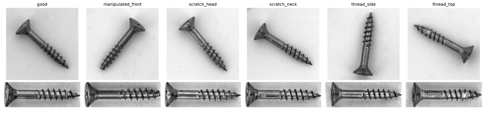
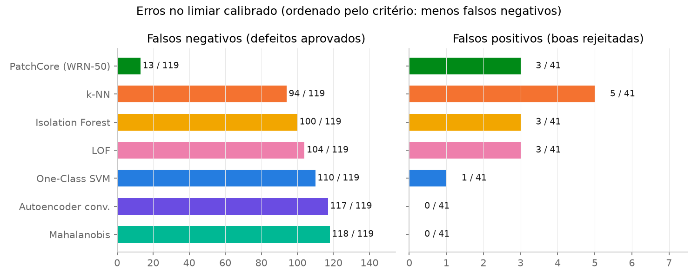
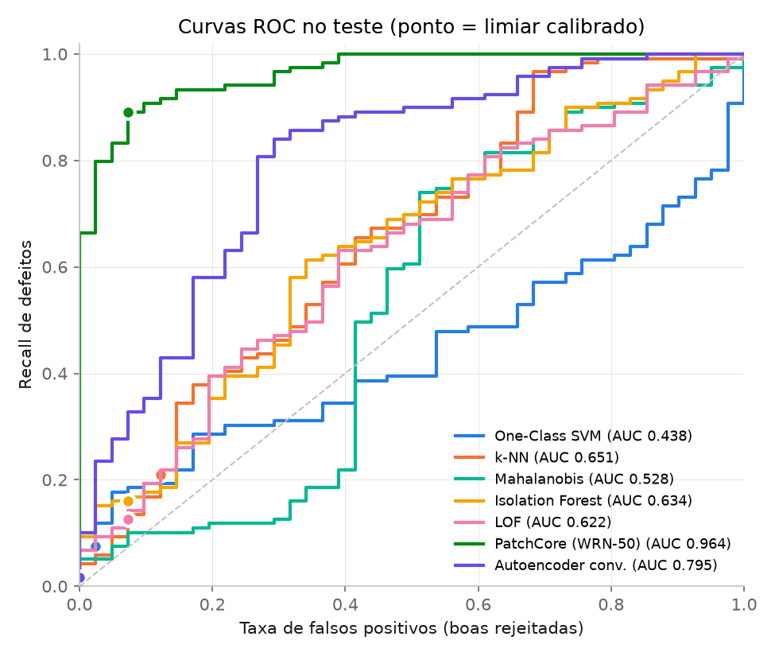
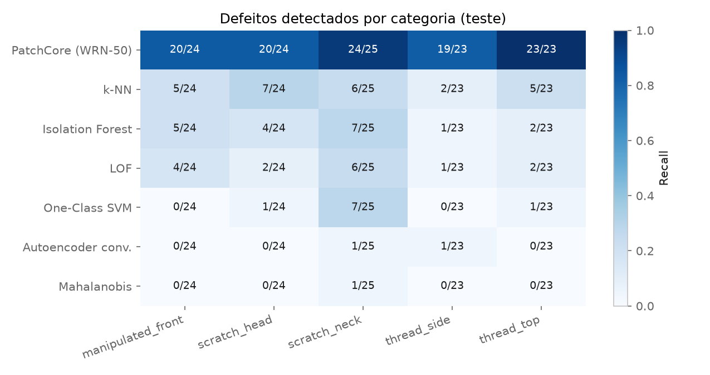
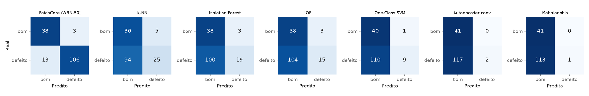
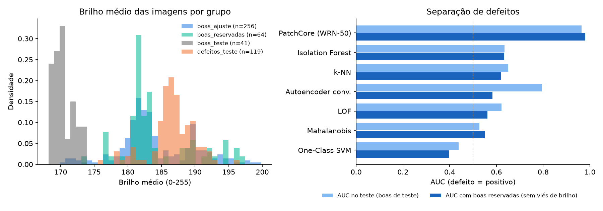

Inspeção de Parafusos Defeituosos
Um detector que aprende só com parafusos bons e precisa apontar os defeituosos numa linha de produção. Comparamos cinco modelos de visão computacional clássica com dois modelos de redes neurais, sob o mesmo protocolo, e escolhemos o que deixa passar menos defeitos.
Aprender o normal para reconhecer o defeito
Numa fábrica há milhares de peças boas e pouquíssimas defeituosas, e cada defeito é diferente. Por isso o problema foi tratado como detecção de anomalias (One-Class): os modelos veem apenas as 320 imagens de parafusos bons do treino e precisam reconhecer, no teste, cinco tipos de defeito que nunca viram.

O objetivo definido pelo grupo foi minimizar falsos negativos: um parafuso defeituoso aprovado como bom é o erro mais caro, porque chega ao cliente.
Uma divisão congelada, a mesma para os sete modelos
256 boas de desenvolvimento: ajustam escalonamento, PCA e os modelos. A escolha de hiperparâmetros usou divisões internas delas (sementes 42, 43, 44).
64 boas reservadas: só definem o limiar de decisão, no quantil de 95% dos scores (meta de 5% de boas rejeitadas).
160 de teste (41 boas, 119 defeituosas): avaliadas uma vez, depois que todos os modelos e limiares estavam congelados.
Manifestos com SHA-256 de todas as imagens e assinaturas do código garantem que nenhuma imagem de teste entrou no ajuste ou na escolha dos modelos.
Pipeline clássico: segmentar, alinhar e descrever

Forma e contorno
Gradientes orientados na ROI de 384x128. Células 8x8: 25.380 atributos.
Textura da rosca
Banco de 12 filtros (4 orientações, 3 comprimentos de onda): 24 atributos.
Rugosidade
Densidade de Canny e estatísticas de Sobel: 3 atributos.
Silhueta
Área, perímetro, solidez, excentricidade, razão de aspecto: 6 atributos.
O vetor completo tem 25.413 atributos. Nas etapas 3 a 5 o grupo comparou 36 representações e escolheu três: R1 (vetor completo), R2 (HOG 16x16 com PCA de 10 componentes mais os 33 atributos auxiliares, 43 dimensões) e R3 (PCA de 25 componentes do vetor todo).
Sete detectores
| Modelo | Família | Entrada | Configuração escolhida |
|---|---|---|---|
| One-Class SVM | clássico | R2 (43) | RBF, nu 0,10, gamma 0,5 x scale |
| k-NN | clássico | R3 (25) | k = 3, distância média |
| Mahalanobis | clássico | R3 (25) | covariância robusta (EllipticEnvelope) |
| Isolation Forest | clássico | R1 (25.413) | 100 árvores, 128 amostras, 50% atributos |
| LOF | clássico | R2 (43) | k = 5, euclidiana |
| PatchCore | rede neural | imagem 224 | Wide ResNet-50 (ImageNet), camadas 2 e 3, coreset 10% |
| Autoencoder | rede neural | imagem 128 | treinado do zero, 200 épocas, erro de reconstrução |
PatchCore
Uma rede pré-treinada no ImageNet transforma cada pequena região da imagem num vetor. Guardamos os vetores das regiões dos 256 parafusos bons num banco de memória (20.070 vetores após o coreset). Uma imagem nova recebe como score a maior distância entre alguma de suas regiões e a região boa mais parecida. Não há treinamento da rede.
Autoencoder convolucional
Uma rede que comprime e reconstrói a imagem, treinada do zero só com parafusos bons, com rotações e espelhamentos aleatórios. A ideia é que ela reconstrua mal o que nunca viu, então o erro de reconstrução vira o score de anomalia.
A rede neural deixa passar 13 defeitos; o melhor clássico, 94
| # | Modelo | FN (de 119) | FP (de 41) | Recall defeitos | Especificidade | AUC |
|---|---|---|---|---|---|---|
| 1 | PatchCore | 13 | 3 | 89,1% | 92,7% | 0,964 |
| 2 | k-NN | 94 | 5 | 21,0% | 87,8% | 0,651 |
| 3 | Isolation Forest | 100 | 3 | 16,0% | 92,7% | 0,634 |
| 4 | LOF | 104 | 3 | 12,6% | 92,7% | 0,622 |
| 5 | One-Class SVM | 110 | 1 | 7,6% | 97,6% | 0,438 |
| 6 | Autoencoder | 117 | 0 | 1,7% | 100% | 0,795 |
| 7 | Mahalanobis | 118 | 0 | 0,8% | 100% | 0,528 |
Ordenação pelo critério do projeto: menos falsos negativos, depois maior especificidade. FN é um parafuso defeituoso aprovado; FP é um parafuso bom rejeitado.




Comparar região por região, e mostrar onde está o defeito

Os descritores clássicos resumem a peça inteira num único vetor global. A segmentação e o alinhamento funcionam bem (figura ao lado), mas a variação natural entre parafusos bons, como a posição exata dos filetes da rosca e reflexos de luz, muda o vetor mais do que um risco de poucos pixels.
O PatchCore compara cada região pequena com regiões de parafusos bons. Um defeito local vira uma região sem par no banco de memória, e o score sobe. Além de classificar, o modelo indica onde olhar, o que ajuda um inspetor humano a confiar na decisão.

As boas do teste são mais escuras que todo o resto
Uma revisão independente dos resultados mostrou um viés no próprio dataset: as 41 boas de teste têm brilho médio 170, contra 184 das boas de treino e 187 das defeituosas. Só o brilho já separaria boas de defeituosas do teste com AUC 1,0. Um modelo poderia parecer bom só por reagir ao brilho.

- PatchCore: a AUC sobe de 0,964 para 0,979 sem o viés. As boas escuras do teste recebem scores um pouco maiores, então os 3 falsos positivos são uma estimativa pessimista.
- Autoencoder: a AUC cai de 0,795 para 0,58. A boa ordenação no teste vinha do brilho, e o limiar calibrado nas boas reservadas ficou acima de quase todos os defeitos.
- Modelos clássicos: continuam entre 0,40 e 0,63, próximos do acaso, com ou sem o viés.
O que levamos deste projeto
- O modelo escolhido é o PatchCore: 106 de 119 defeitos detectados, 3 de 41 boas rejeitadas, sem treinar a rede, só com 256 imagens boas.
- O pipeline clássico (CLAHE, Otsu, morfologia, ROI alinhada, HOG, Gabor, bordas, geometria) segmenta bem, mas descritores globais não capturam defeitos pequenos. Isso confirma a suspeita de sobreajuste registrada nas etapas do SVM e do k-NN.
- Para não deixar passar nenhum defeito, o PatchCore rejeitaria 16 das 41 boas; os modelos clássicos rejeitariam entre 38 e 41. Esse número é uma análise descritiva no teste, não uma escolha de limiar.
- Limitações: o teste tem só 160 imagens (cada boa vale 2,4 pontos de especificidade), as boas de teste têm o viés de brilho descrito acima e não há defeitos separados do teste para ajustar o limiar com foco em recall.
Como rodar
export DATASET_DIR="$HOME/Downloads/data"; export TRAIN_FLAT_IS_GOOD=true
python -m unittest discover -s tests # 107 testes
python -m src.lof_experiments compare ... # etapa 6: LOF
python -m src.final_calibration ... # limiar final dos modelos clássicos
python -m src.neural --model patchcore ... # etapa 7 (cerca de 19 min em CPU)
python -m src.neural --model autoencoder ... # etapa 7 (cerca de 8 min em CPU)
python -m src.final_evaluation ... # etapa 8: avaliação única no teste
python -m src.robustness_check ... # viés de brilhoOs comandos completos estão no README do repositório, seção "Etapas 6 a 8". O notebook notebooks/04_avaliacao_final.ipynb mostra todas as tabelas e figuras a partir dos resultados salvos em results/stage8/.